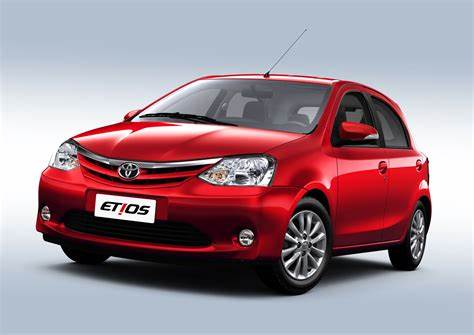
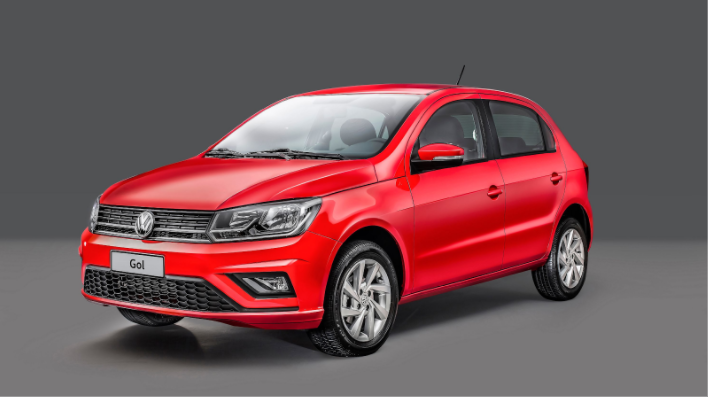
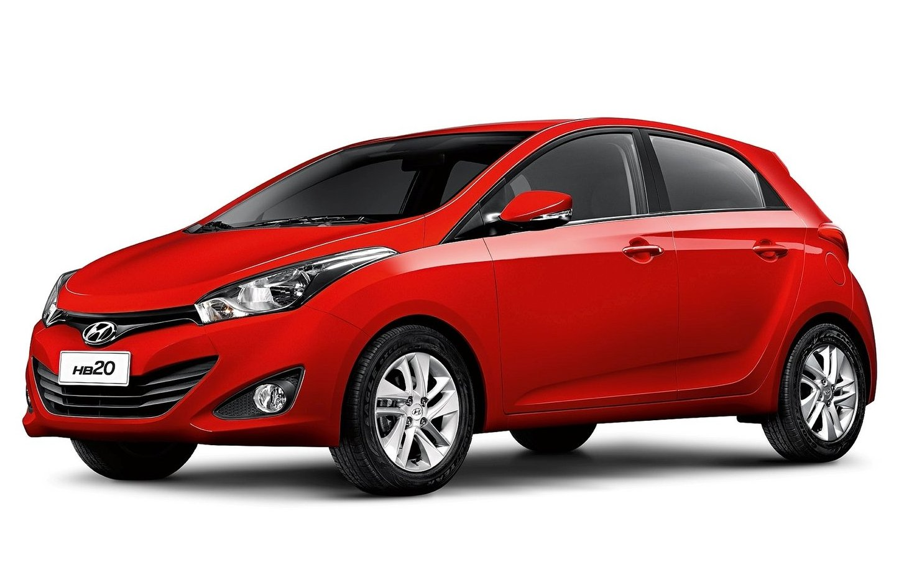
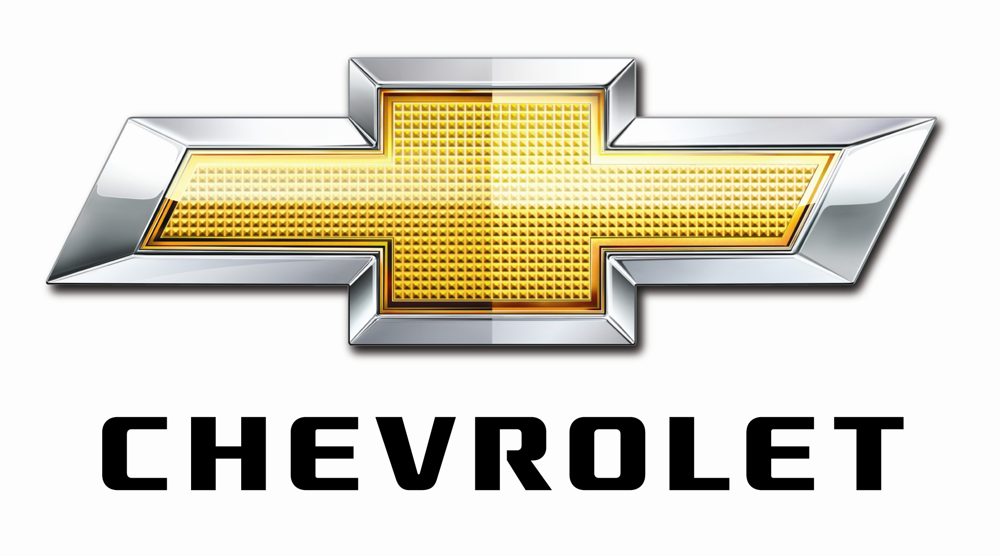

AUTOINFO
informações e conhecimento na palma da sua mão!
5 MARCAS DE CARROS DE BOM CUSTO E QUALIDADE
━━━━━━━━━━━━━━━━━━━━━━

AToyota é amplamente conhecida pela sua durabilidade
e baixa manutenção. Embora seus carros não sejam os mais
baratos para comprar, a confiabilidade e a baixa depreciação
fazem com que sejam uma excelente opção a longo prazo.
Modelos populares:
Toyota Corolla: Considerado um dos sedãs mais confiáveis e com excelente valor de revenda.
Toyota Etios: Um carro de entrada com boa economia de combustível e baixo custo de manutenção.
Toyota Yaris: Oferece bom desempenho, conforto e economia
Pontos positivos:
Alta durabilidade e resistência.
Manutenção simples e de baixo custo.
Boa revenda e baixo índice de depreciação.
Pontos negativos:
Preço inicial mais alto em comparação com marcas concorrentes.

━━━━━━━━━━━━━━━━━━━━━━
A Volkswagen oferece carros com qualidade de construção e tecnologia a preços razoáveis. Além disso, as peças de reposição são r
elativamente acessíveis, e seus carros têm uma boa performance e confiabilidade.
Modelos populares:
Volkswagen Gol: Um dos carros mais vendidos no Brasil, com ótimo custo-benefício, manutenção barata e economia de combustível.
Volkswagen Polo: Um hatch compacto de boa performance e baixo custo de manutenção.
Volkswagen T-Cross: Um SUV compacto que oferece boa qualidade, desempenho e tecnologia.
Pontos positivos:
Boa qualidade de construção e desempenho.
Baixo custo de manutenção e revenda forte.
Pontos negativos:
Modelos mais novos podem ter um preço inicial mais elevado.
O custo de manutenção pode ser mais alto em alguns modelos.

━━━━━━━━━━━━━━━━━━━━━━

A Honda é famosa por produzir carros confiáveis, com boa performance e baixo custo de manutenção. A depreciação também tende a ser baixa, o que torna a revenda desses carros vantajosa.
Modelos populares:
Honda Civic: Um dos sedãs mais confiáveis e duráveis, com bom desempenho e baixo custo de manutenção.
Honda Fit: Um hatch com excelente consumo de combustível, confiabilidade e versatilidade.
Honda HR-V: Um SUV de bom desempenho, confiável e com boa tecnologia.
Pontos positivos:
Durabilidade e confiabilidade.
Manutenção barata e peças acessíveis.
Boa revenda e baixo custo de depreciação.
Pontos negativos:
Preço inicial relativamente alto.
━━━━━━━━━━━━━━━━━━━━━━

A Hyundai é uma marca que tem conquistado o mercado brasileiro com preços competitivos, tecnologia e design moderno, sem abrir mão da qualidade.
Modelos populares:
Hyundai HB20: Um hatch compacto que oferece bom desempenho, boa economia de combustível e preço acessível.
Hyundai Creta: Um SUV de médio porte com bom custo-benefício, ótimo desempenho e excelente espaço interno.
Hyundai Tucson: Outro SUV de boa qualidade, confortável e com bom desempenho.
Pontos positivos:
Design moderno e boa tecnologia.
Garantia longa (geralmente 5 anos).
Carros com boa qualidade de construção e desempenho.
Pontos negativos:
Manutenção e peças podem ser um pouco mais caras que as de marcas como Fiat ou Chevrolet.

━━━━━━━━━━━━━━━━━━━━━━

A Chevrolet é conhecida por oferecer modelos acessíveis, economia de combustível e facilidade de manutenção. Muitos dos seus carros têm um ótimo custo-benefício, com preços de venda competitivos.
Modelos populares:
Chevrolet Onix: Um dos carros mais vendidos do Brasil, com ótimo custo-benefício, baixo consumo de combustível e preços de manutenção acessíveis.
Chevrolet Tracker: Um SUV compacto com boa performance, tecnologia e conforto.
Chevrolet Spin: Um carro de sete lugares, ideal para quem precisa de mais espaço.
Pontos positivos:
Manutenção de baixo custo e ampla rede de concessionárias.
Ótima revenda e baixo custo de depreciação.
Pontos negativos:
Alguns modelos podem ter acabamento simples.
Tecnologia em versões mais acessíveis pode ser um pouco limitada.
6. Fiat